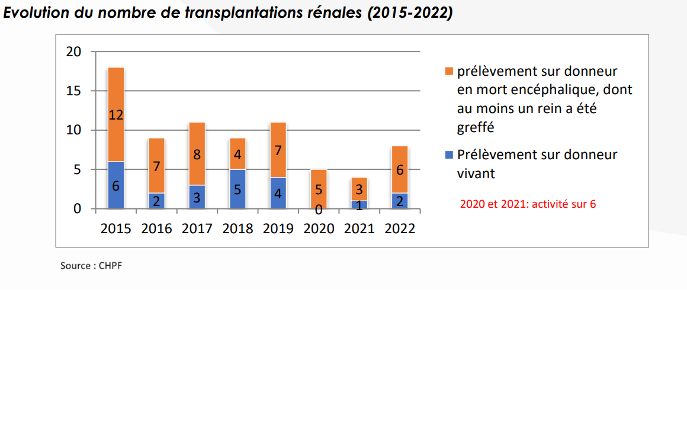

Première greffe réalisée en Polynésie française
La première greffe réalisée en Polynésie française a eu lieu en octobre 2013,
3 mois après l'adoption de la délibération "relative au don et à l’utilisation des éléments
et produits du corps humain" visant à permettre l’activité de greffe rénale à Tahiti.
Auparavant, les patients étaient évasanés en métropole.
En 2022, 131 greffes rénales avaient été réalisées à Tahiti dont 30 à partir de donneurs vivants (23%).

Auparavant, les patients étaient évasanés en métropole.
En 2022, 131 greffes rénales avaient été réalisées à Tahiti dont 30 à partir de donneurs vivants (23%).
Informations
Année : 2013
Catégories :
Mots-clés :
Greffe
Sources :
Tahiti Info,
Communiqué de presse du CHPF
Pour aller plus loin :
Reportage TNTV,
Lien
Informations validées le 27/06/2025